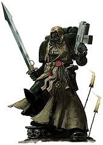
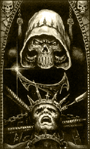

| |
Mesék
az Angyalokról
Az alább található
három, rövidebb elbeszélés, egyfajta kiegészítése
a Sötét Angyalok történetét bemutató
cikknek. Szorosabban vagy lazábban, de mindegyik
itt leközölt írás kapcsolódik valahogyan az ott leírtakhoz.
Eredetileg nem mindegyik történetnek volt címe, így
kénytelen voltam én adni nekik. Remélem
tetszeni fog mindenkinek.
- Rince
Vadember
Tízszer szállt le a fagy és a tomboló hóvihar az erdõre, amely otthonául szolgált a fiatal primarchának, akit késõbb Lion El'Jonsonként ismert meg a világ. Ám ennyi idõ is elég volt neki, hogy teljesen megnõjön, köszönhetõen a genetikailag belécsepegtetett géneknek, melyek rendkívüli mértékben meggyorsították a fejlõdését. Eddigi élete folyamán el volt vágva minden emberi köteléktõl, nem volt lehetõsége megtanulni beszélni, dühét pusztán ordításokkal, elégedetlenségét tombolással jelezhette. Csupaszon járta az otthonául szolgáló fenyõerdõt, mikor vadászott, vagy amikor éppen rá vadásztak. A haja hosszú volt és ápolatlan, tûnõdõ szemei szinte izzani látszottak, lelógó szõkés barna fürtjeinek takarásában. Körmei hosszúak és mocskosak voltak a földtõl és a vértõl.
És elérkezett a nap, mikor ez a vadember, ki inkább volt oroszlán, mint ember, meghallotta a furcsa idegen hangot. Egy hangot, melyet ezelõtt még soha nem hallott. Egy ember nevetését. Kíváncsiságtól hajtva, Jonson elindult, hogy felfedezze ezt az új, furcsa zajt.
Egy tisztáson akadt rá a vadászó csapatra, amely éppen a bolygó egyik veszélyes káosz bestiájának teteme fölött nevetgélt és beszélgetett. Szemei elkerekedtek a csodálkozástól. Jonson jól megfigyelte ezeket a veszélyesnek tûnõ kreatúrákat, akik bár nagyon hasonlítottak rá, mégis olyannyira mások voltak. Teljesen megdöbbent a látottaktól, olyannyira, hogy elfeledkezett a természetes óvatosságról, és ezért majdnem az életével fizetett.
Az egyik lovag felpillantott, és meglátta Jonsont a tisztás szélén. Amit látott nem ember volt, inkább tûnt a vadon egyik teremtményének. Ösztönösen emelte fel pisztolyát és zúdított sortüzet az idegenre. Jonsont csak emberfeletti reflexei mentették meg a biztos haláltól, mikor elvetõdött a golyók útjából. Egy lövedék mégis belefúródott a bal vállába, és ott felrobbant, ízzó adamantium darabkákkal töltve meg húsát. Jonson továbbgurult megpróbálva elmenekülni, de addigra már magára vonta az egész csoport figyelmét. Hátát egy vastag fának vetette, és onnan morgott a lovagok csoportjára, mely körbevette õt, és elhatározta, hogy nem adja könnyen az életét.
A Birodalom történelme talán teljesen másként alakul, ha Jonsont akkor és ott lelövik, de nem így történt. Mikor a lovagok lövésre emelték pisztolyaikat, egyikük elkiáltotta magát: "Állj!". Gyilkos tekintetek kereszttüzétõl kisérve a fiatal lovag leszállt hátasáról, és odasétált
Jonsonhoz. Pisztolyát elrakta, lánckardját a földre ejtette, Jonson pedig nem támadta meg a felé közelítõ ifjú lovagot. A lovag kinyújtotta kezét és hátrasöpörte Jonson tincseit az arcából, megmutatva a primarcha tökéletesen emberi vonásait, és a szemében csillogó értelmet.
"Nézzétek." - mondta a lovag - "Õ ember, nem bestia.". És ezzel visszavezette Jonsont a hátramaradt lovagokhoz, akik csodálkozva és megilletõdve álltak. A fiatal lovagot Luthernek hívták, és ezen tettével az Õ, Jonson és a Sötét Angyalok sorsa kibogozhatatlanul összefonódott.
|
A Szikla
Caliban pusztulását követõen
a Sötét Angyalok a Sziklát tették meg új
otthonukká. Termek és alagutak hálózatát vájták
bele a lerombolt monostorerõd alatti kõágyba.
Idõvel pedig hajtómûvekkel is felsze- relték,
ezzel lehetõvé téve a hiperûrutazást. És
mindeközben a rendház rendületlenül folytatta
titkos küldetését a galaxisban.
Az egykoron legnagyobb erõd monostor
romjai alatt, a Szikla számtalan titkot rejt. Minél
mélyebbre merészkedik valaki, annál közelebb
jut az igazság megismeréséhez. Az óriási kõszikla
szívében található a legsötétebb katakomba.
A katakomba, ahol immáron 10.000 éve tartják életben
egy sztázismezõ segítségével azt az emberi
roncsot, aki egykoron Luther volt.
|

|
Mivel kötõdése a hipertérhez
szakadatlanul fenn áll, segítségével a Sötét
Angyalok, néhány kivételes esetben képesek
meglátni a jövõt. Minden nagymester a maga idejében
megpróbálkozik a lehetetlennel, hogy megbánására
késztesse az eretnekek legnagyobbikát. Ám eddig
erre egyikük sem volt képes: Luther csak
szakadatlanul ismétli zavart monológját, és
hiszi, hogy nem szorul rá a megbánásra, hiszen
egyszer majd Lion El’Jonson visszatér és
megbocsát neki.
Maga a Szikla soha nem marad egy helyen
huzamosabb ideig, leggyakrabban mindössze néhány
generációt. Éppen ezért a Sötét Angyalok
sosem toboroznak ugyanarról a bolygóról. Ez az
oka annak, hogy a rendháznak szigorú beavatási
szertartásokra és könyörtelen próbatételekre
van szûksége ahhoz, hogy megbizonyosodhasson újoncainak
lojalitásáról. A rend mestereinek tudnia kell, hogy azok, akik a rendházba felvételt
nyernek, igazhitû Sötét Angyalokká válnak.
Mivel a rend tagjai mind eltérõ háttérrel
rendelkeznek, a Sötét Angyalok nagyban függnek
közös örökségüktõl, amely összetartja õket.
Minden jövendõbeli ûrgárdistának túl kell
jutnia az összes szükséges beavatási szinten,
csak ezután válhat belõle igazi Sötét Angyal.
Onnantól kezdve viszont õt is ugyanaz a szégyen
fogja vezetni, ugyanaz a titkos cél, amely minden
Sötét Angyal sajátja Caliban pusztulása óta: hogy
levadásszanak minden árulót, és visszaállítsák
a rendház becsületét.
| "Felejtsd el az eddigi életed.
Ettõl a naptól kezdve te is Sötét
Angyal vagy – semmi más nem lehet
fontos számodra. A Rendház az egyetlen, ami számít.” |
Azrael parancsnok beszédet
mond egy frissen sorozott felderítõ
osztagnak
Vallatás
|

|
-
Bánd
meg bûneid, bánd meg!
Visszhangoztak még sokáig a
mesterkáplán szavai a barlangszerû,
durva falú cellában. A visszhangnak köszönhetõen
hangja egy hadseregének hangzott, egy káplánokból
álló hadsereg hangjának, amely az ûrgárdistát
vallatja. De a bukott Sötét Angyal nem válaszolt.
A káplán átvágott a kõpadlón
a magatehetetlen ûrgárdista felé. A
halogén lámpák fénye visszaverõdött
páncéljának fényes, fekete felületérõl,
miközben egyik kezével a nyakában függõ
rózsafüzérrel játszadozott. Asmodai több,
mint egy évszázada szolgálta már a
Rendházat, és ezen idõ alatt mindössze
két bukott Sötét Angyal bánta meg vétkeit
kezei közt. |
A káplán megállt foglya elõtt és
szembefordult az összetört harcossal. Sötét,
hideg szemek tekintettek ki Asmodai
koponya-maszkja mögül.
- Gyónj! – sziszegte.
A bukott szorosan összezárta szemét,
hogy elkerülje vallatójának tekintetét.
- Bánd meg bûneid, és halálod
gyors és viszonylag fájdalommentes lesz. –
mondta hidegen. – Ám, ha továbbra is
tagadod bûneid, pusztulásod borzalmas lesz. Borzalmasabb,
mint a legszörnyûbb rémálmaid. A hipertér démonainak
vadsága eltörpül a Császár haragjához képest!
A bukott Sötét Angyal lassan kinyitotta vérben
forgó szemeit, de nem nézett vallatójára. A
homályos, hideg terem megbocsátás nélküli
falai azonban nem mutattak semmiféle bátorítást.
A vallató-káplán tiszteletet parancsoló alakja
mogorván nézett vissza rá.
A katakomba falairól aláhulló víz ütemes
csepegése betöltötte az ûrgárdista tudatát.
Becsukta szemeit, így próbálván meg kizárni a
víz monoton hangjait. Ám a csepegésbõl kopogás
lett, a kopogás pedig dübörgéssé erõsödött,
míg már csak szívének ütemes, pánikszerû
dobogása lüktetett a fejében.
Az árnyékok remegtek, szinte vonaglani látszottak
a töredezett köveken, és a legsötétebbek,
mintha közelebb húzódtak volna.
- Ki a te urad? – követelte
Asmodai.
- Nincs se uram, se mesterem.
- A Császár a te urad!
- A Császár megtagadott minket, a Káosz
átkozza el a lelkét. – nyöszörögte a
bukott, miközben elméje a megtörés határára
sodródott – Lion El’Jonson elárult
minket.
- A Primarcha a mi megváltónk.
– üvöltötte a káplán – Az Oroszlán
feláldozta magát a rendért. Neki köszönhetünk
mindent: a rendházat, az erõnket, a megváltásunkat,
a létezésünk! És még azt mered mondani, hogy
nincs urad? – Asmodai hangja suttogássá
halkult, tele volt megvetéssel.
A bukott Sötét Angyal nem tudta mióta
tart már fogsága a Sziklán, sem azt, hogy hány
napja már, hogy a vallatása kezdetét vette.
Csak azt tudta, hogy minél távolabb akar lenni a
káplán vég nélküli kérdéseitõl
és a kínszenvedéstõl. De plasztacél béklyóinak
fogságában csak annyira tellett tõle, hogy
elfordította fejét vallatójától.
Mikor újra megszólalt, Asmodai hangja érzelmektõl
mentesnek, szinte gépiesnek hatott:
- Amennyiben nem ismered el szégyenteljes
tetteid, és nem gyónod meg bûneid, rám hárul
a feladat, hogy megszabadítsalak tõlük. Bármilyen
áron.
Ekkor a bukott észrevette a szerkezetet,
amit a káplán a másik kezében tartott. Annak
számtalan fénylõ pengéje vörösen villant a
cella gyenge megvilágításában.
- Ez az én szent feladatom,
megszabadítom a lelked a Káosz sötét
isteneinek befolyása alól - kántálta
Asmodai – És megmentem a lelked, még ha
ebbe bele is kell pusztulnod.
Fordította: Hmuda &
Rincewind
|
|